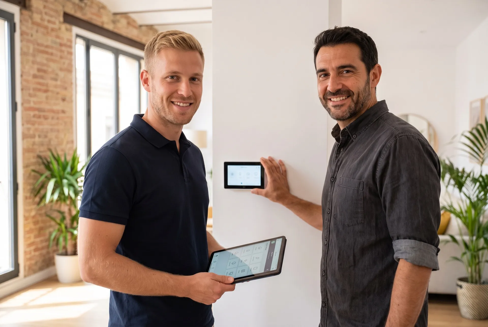

Un fundador cercano y un equipo técnico certificado, una obsesión: que tu casa trabaje para ti y no al revés.

Lumiox diseña e instala sistemas domóticos a medida para viviendas y negocios de Barcelona y su área metropolitana. Integramos iluminación, climatización, persianas, seguridad, sonido y gestión energética en una única plataforma de control, adaptada a las necesidades técnicas y funcionales de cada proyecto.
Mario dirige la relación con cada cliente y el diseño técnico del proyecto, mientras que nuestro equipo de instaladores certificados ejecuta la instalación sobre el terreno bajo los estándares KNX, Loxone, Control4 y sistemas inalámbricos. Esta combinación de asesoramiento experto y ejecución técnica certificada garantiza un sistema fiable desde la puesta en marcha y durante toda su vida útil.
Founder & Domotics Expert
Es la persona con la que hablarás desde el primer contacto. No instala él mismo los sistemas: su papel es entender a fondo cada proyecto, diseñar la solución técnica más adecuada y coordinar al equipo de instaladores certificados que la ejecuta sobre el terreno. Experto en domótica con amplia experiencia asesorando a hogares y negocios sobre el sistema —KNX, Loxone, Control4 o soluciones inalámbricas— que mejor encaja con cada necesidad.
Su terreno: Asesoramiento experto, diseño de proyectos y relación directa con el cliente.
Seis técnicos especializados ejecutan cada instalación sobre el terreno, con formación certificada en los principales estándares del sector.
Ejecuta instalaciones cableadas completas: cableado estructurado, programación de escenas y puesta en marcha de sistemas KNX y Loxone.
Especializado en sistemas Zigbee, Z-Wave y Wi-Fi para viviendas ya habitadas, sin picar paredes ni hacer reformas.
Configura sistemas de control multimarca y asegura la compatibilidad con Alexa, Google Home y Apple HomeKit.
Instalador autorizado en baja tensión, responsable de cuadros eléctricos y de que cada instalación cumpla la normativa vigente.
Configura la automatización de clima, persianas e iluminación para maximizar la eficiencia energética de cada proyecto.
Da seguimiento a cada instalación una vez entregada: revisiones, actualizaciones y asistencia técnica continua.
La mejor domótica es la que no se nota: se nota la casa. Diseñamos sistemas que desaparecen en el día a día.
Trabajamos con estándares abiertos (KNX, Zigbee, Matter). Tu instalación es tuya, no de una marca ni de una app.
Contamos con años de experiencia en la zona y una capacidad de respuesta rápida y efectiva. Si algo falla un viernes por la tarde, no hablas con un call center: hablas con nosotros.
Mira nuestros proyectos con su antes y después, o cuéntanos el tuyo: la primera visita técnica es gratuita.